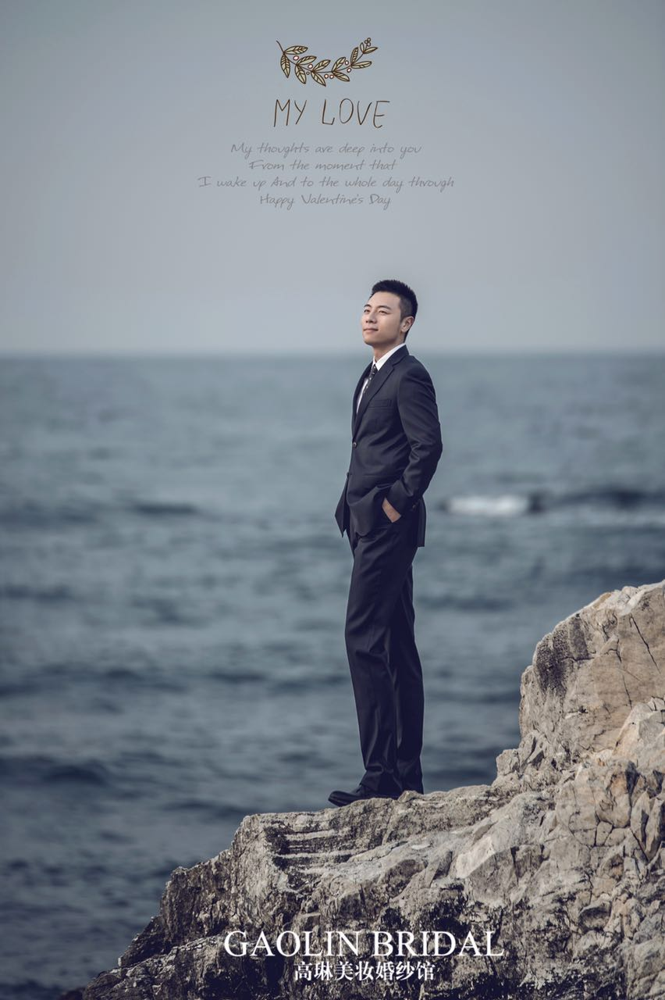

About Me
I grew up in China, came to Canada 10 years ago for college. I graduated from University of Toronto Specialist in Finance. Upon graduation, I started my job at CIBC, I am a Business Production Analyst for CIBC Wealth. Two years ago I decided to purse another degree, I went to Queen's University for a Master of Finance while doing my full time job. It was not easy to accomodate work, life and school, I am glad I made it. The reason I join this program is that I want to expand my knowedge in programming for both front-end and back-end. My interest is plaing basketball. I am a fan of Golden State Warriors and Stephen Curry, the reason I am into them is because their fast transition and strong defence as a team, although this year they had some troubles due to injuries, but I strongly believe they will have a strong come back in playoffs